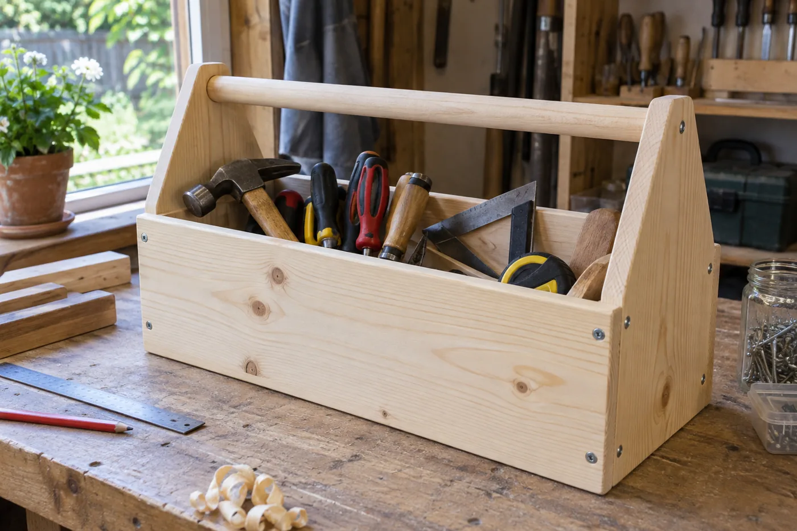
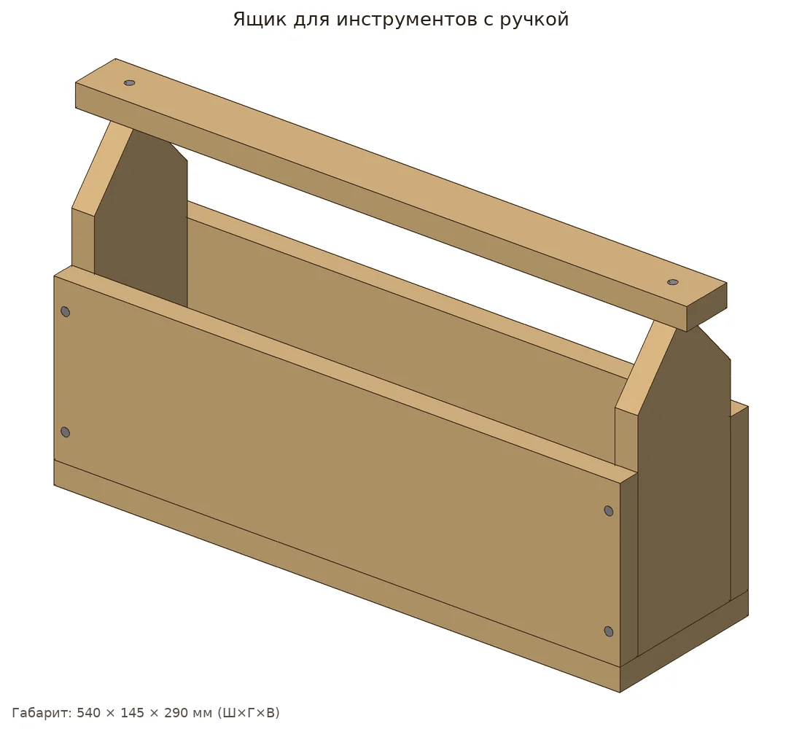
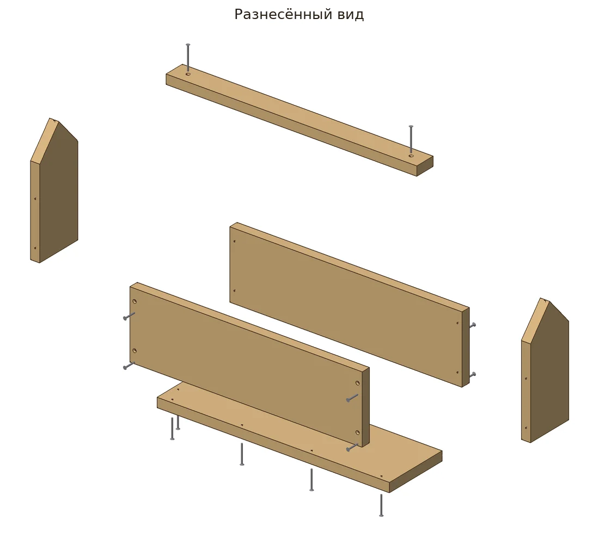
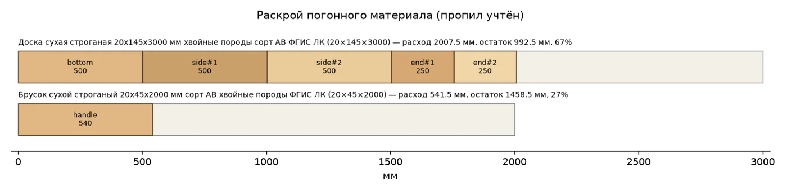
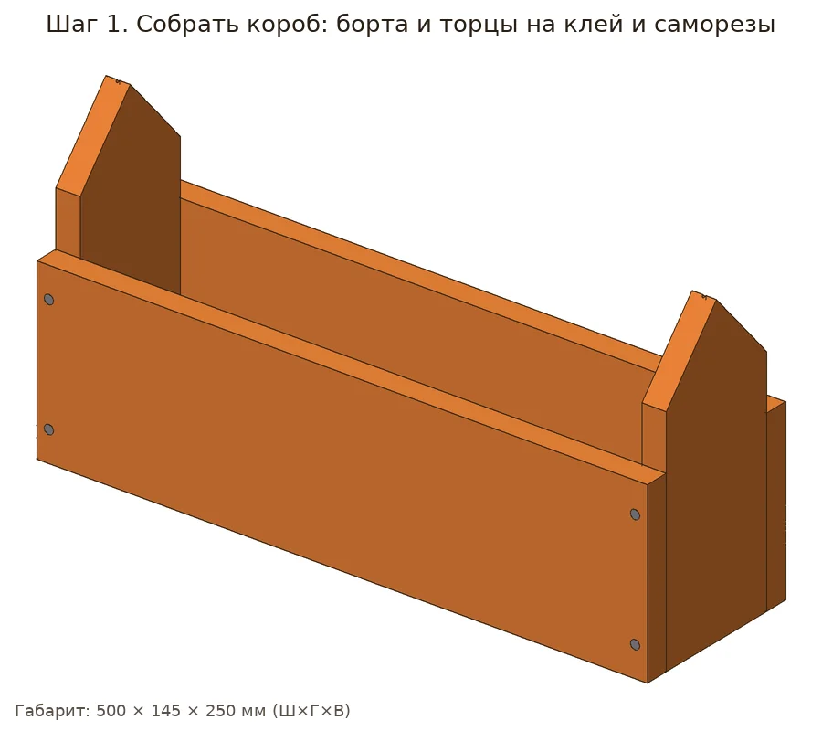
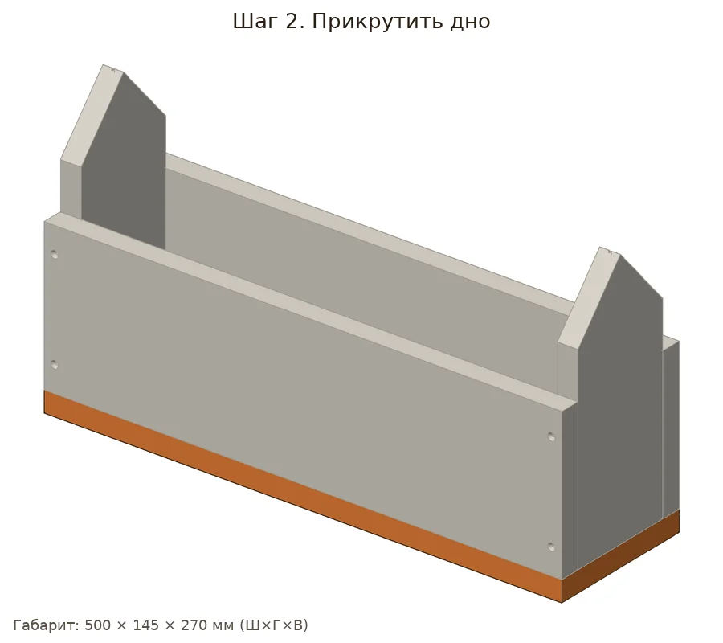
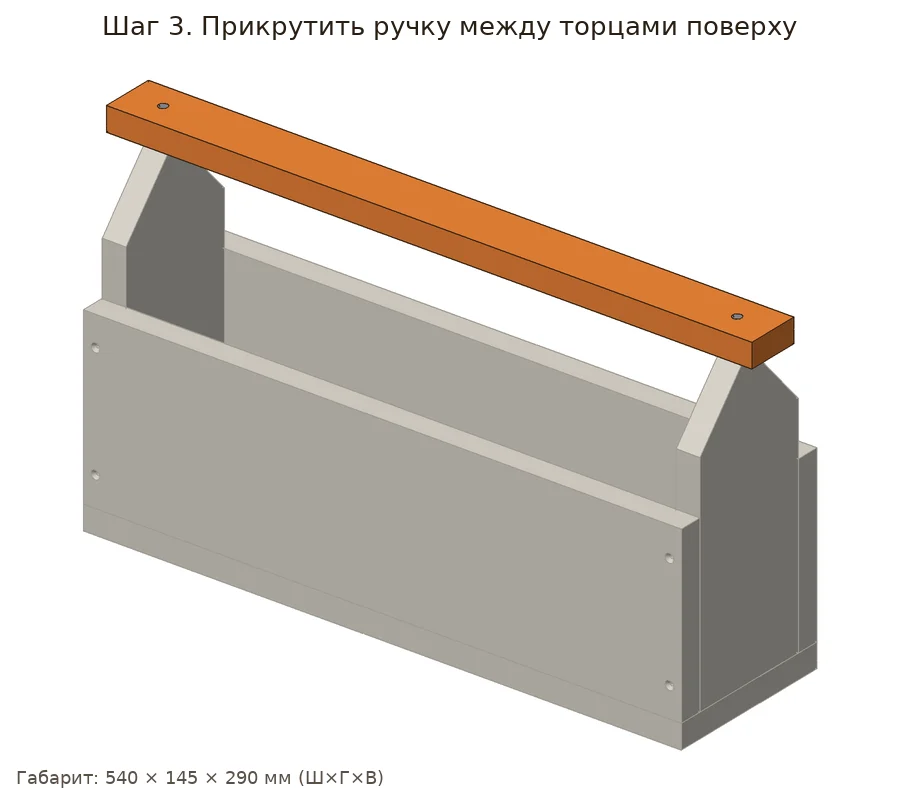
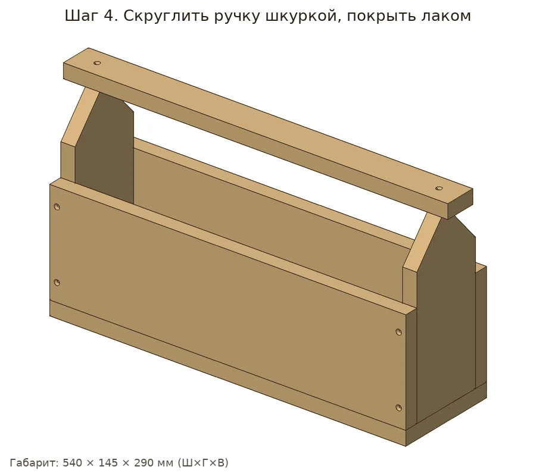

Открытый столярный ящик-переноска: торцы с треугольным верхом, ручка-перекладина из бруска.
| Позиция | Зачем | Кол-во | Цена | Сумма |
|---|---|---|---|---|
| материал | ||||
| Доска сухая строганая 20х145х3 Доска сухая строганая 20х145х3000 мм хвойные породы сорт АВ ФГИС ЛК · арт. 102356 |
раскрой: 1 заготовка по 3000 мм | 1 шт | 506 ₽ | 506 ₽ |
| Брусок 20×45×2000 Брусок сухой строганый 20х45х2000 мм сорт АВ хвойные породы ФГИС ЛК · арт. 626000 |
раскрой: 1 заготовка по 2000 мм | 1 шт | 97 ₽ | 97 ₽ |
| крепёж | ||||
| Саморезы 41 мм Саморезы ГД 41x3,5 мм (25 шт.) · арт. 125770 |
нужно 12 шт. + запас → 14; в упаковке 25 | 1 упак | 40 ₽ | 40 ₽ |
| Саморезы 51 мм Саморезы ГД 51x3,5 мм (18 шт.) · арт. 125772 |
нужно 4 шт. + запас → 6; в упаковке 18 | 1 упак | 34 ₽ | 34 ₽ |
| отделка | ||||
| Лак яхтный аэрозоль Лак алкидный яхтный аэрозольный Престиж бесцветный 425 мл глянцевый · арт. 1098186 |
нужно ≈0.179 л | 1 шт | 204 ₽ | 204 ₽ |
| расходник | ||||
| Шкурка P120 Наждачная бумага Flexione 230х280 мм Р120 влагостойкая · арт. 691898 |
≈2.05 листа | 3 шт | 42 ₽ | 126 ₽ |
| Клей ПВА Клей ПВА Момент Столяр Экспресс D2 125 г · арт. 675688 |
нужно ≈5 г | 1 шт | 238 ₽ | 238 ₽ |
| оснастка | ||||
| Бита PH2 Бита Hesler PH2 магнитная 25 мм (882083) · арт. 882083 |
саморезы | 1 шт | 33 ₽ | 33 ₽ |
| Сверло по дереву спиральное Vi Сверло по дереву спиральное Vira 3х60 мм с зенкером (552053) · арт. 684796 |
утопить головки | 1 шт | 176 ₽ | 176 ₽ |
| Ножовка по дереву Ножовка по дереву 400 мм 9 зуб/дюйм средний зуб · арт. 681543 |
раскрой | 1 шт | 226 ₽ | 226 ₽ |
| Стусло Стусло Сибртех пластиковое 300х65 мм (22571) · арт. 968520 |
ровные торцы 90°/45° | 1 шт | 143 ₽ | 143 ₽ |
| Струбцина столярная Sparta G-т Струбцина столярная Sparta G-тип 75х55 мм (206535) · арт. 687434 |
склейка | 1 шт | 265 ₽ | 265 ₽ |
| Рулетка Рулетка с фиксатором 3 м x 16 мм · арт. 159373 |
разметка | 1 шт | 99 ₽ | 99 ₽ |
| Карандаш Карандаш строительный малярный Hesler (2 шт.) · арт. 125418 |
разметка | 1 упак | 30 ₽ | 30 ₽ |
| Итого, включая оснастку 972 ₽ | 2217 ₽ | |||
Источник идеи: https://www.drive2.ru/c/564027750768182243/. Проект переработан под шуруповёрт 12 В и ручной инструмент.
Параметрическая 3D-модель с настоящими отверстиями, крепёж расставлен по правилам (Eurocode 5, упрощённо для DIY), раскрой с учётом пропила, закупка упаковками. Габарит модели 540×145×290 мм, масса ≈2.88 кг. Прочность не рассчитывалась.







Проверка пройдена: ошибок и предупреждений нет.
| Соединение | Крепёж | Шт. | Заход | Засверловка |
|---|---|---|---|---|
| Борт №1 → Торец (домиком) №1 | 3.5×41 | 2 | 21 мм | сверло 2.5 мм |
| Борт №1 → Торец (домиком) №2 | 3.5×41 | 2 | 21 мм | сверло 2.5 мм |
| Борт №2 → Торец (домиком) №1 | 3.5×41 | 2 | 21 мм | сверло 2.5 мм |
| Борт №2 → Торец (домиком) №2 | 3.5×41 | 2 | 21 мм | сверло 2.5 мм |
| Дно → Борт №1 | 3.5×41 | 4 | 21 мм | сверло 2.5 мм |
| Дно → Торец (домиком) №1 | 3.5×51 | 2 | 31 мм | сверло 2.5 мм |
| Ручка → Торец (домиком) №1 | 3.5×51 | 1 | 31 мм | сверло 2.5 мм |
| Ручка → Торец (домиком) №2 | 3.5×51 | 1 | 31 мм | сверло 2.5 мм |
Доска сухая строганая 20х145х2000: 2007.5 мм
Брусок сухой строганый 20х45х2000 (ручка): 541.5 мм
Саморез 3.5×41: 12 шт
Саморез 3.5×51: 4 шт
Шкурка P120: ≈2.05 лист
Лак-аэрозоль: ≈0.18 л
Клей ПВА: ≈0.01 кг
Смета «Что купить в Петровиче» выше посчитана этой же моделью: упаковки, замены и оснастка.